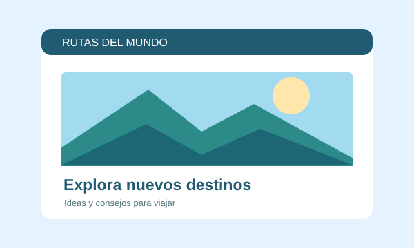

Proyecto de clase
Blog de viajes

¿Qué he practicado?
Títulos descriptivos, jerarquía de encabezados, navegación y organización de contenidos orientada a personas y buscadores. Esta ficha es un ejemplo didáctico.
Volver al portafolioProyecto de clase

Títulos descriptivos, jerarquía de encabezados, navegación y organización de contenidos orientada a personas y buscadores. Esta ficha es un ejemplo didáctico.
Volver al portafolio